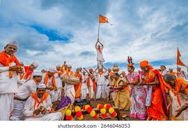

Traditions and Festivals

Siddheshwar Yatra
Siddheshwar Yatra is one of the largest festivals celebrated in Solapur. Thousands of devotees participate in this grand event every year.

Pandharpur Wari
Wari is a spiritual pilgrimage where devotees walk hundreds of kilometers to reach Pandharpur and worship Lord Vitthal. It is one of the most important cultural traditions in Maharashtra.

Solapur Chaddar
Solapur is famous for its handloom textile industry especially the traditional Solapur Chaddar which is exported worldwide.